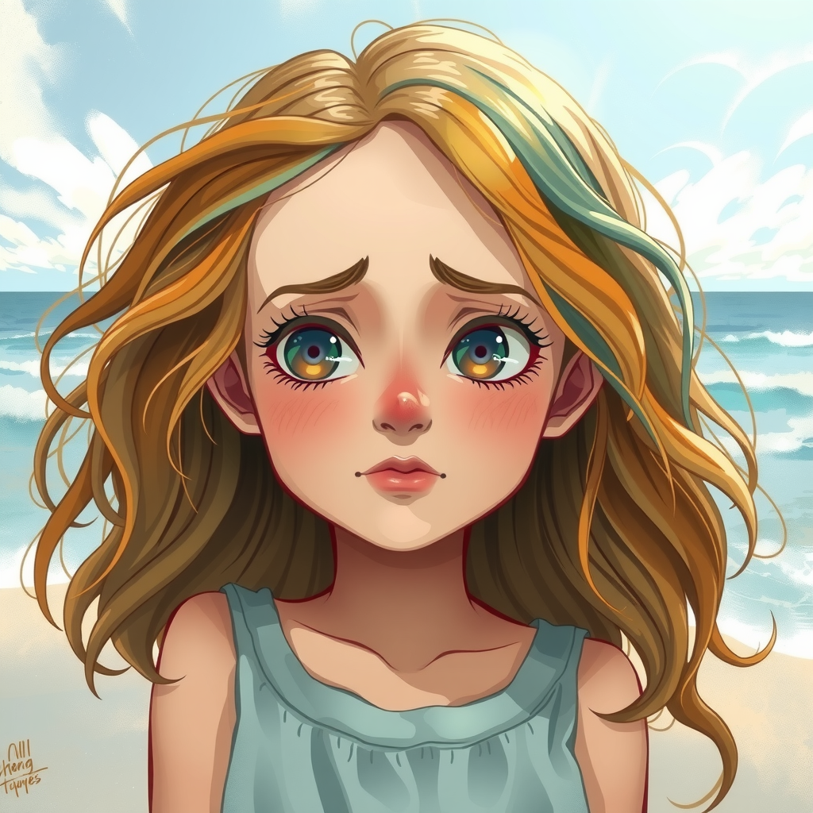
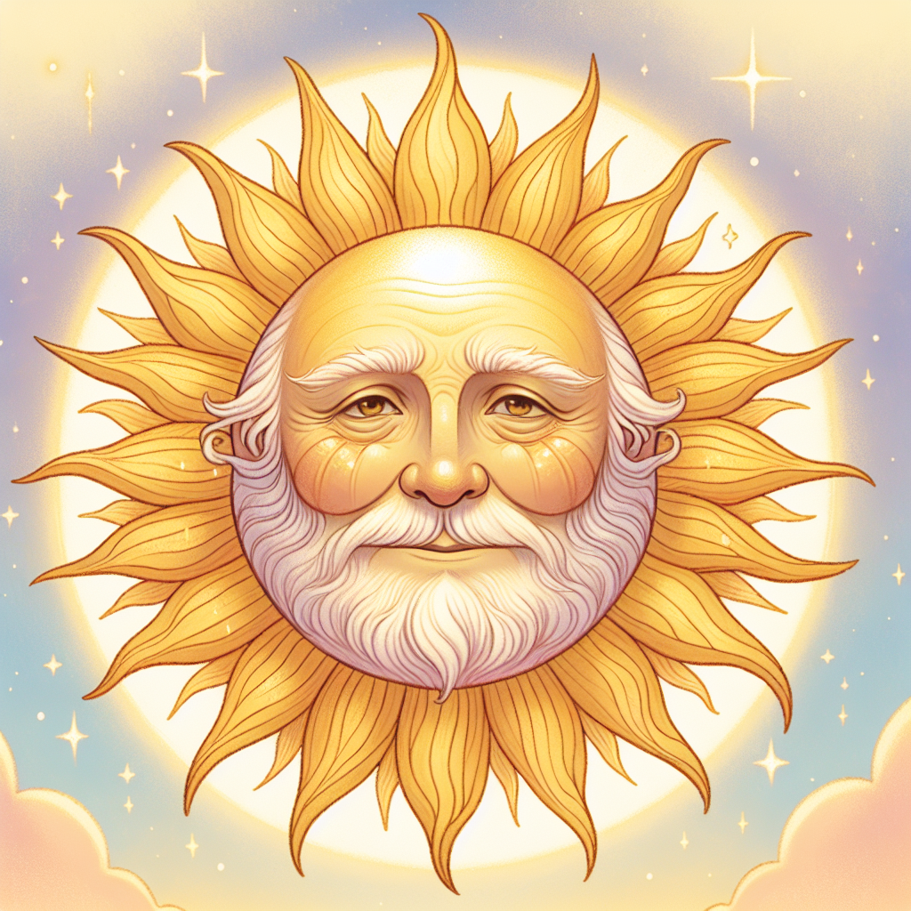

Capítulo 6: El Eco del Corazón
La noche cayó sobre la playa solitaria y Rubí seguía sentada en la arena, con los brazos alrededor de sus rodillas y el corazón lleno de preguntas...
La pregunta del Sol quedó flotando en el aire como una burbuja de cristal: "¿Te gustaría ser humana... para siempre?". Rubí llevaba horas mirando las olas, y cada ola traía un recuerdo diferente. Recordó la libertad de bailar entre las nubes, la alegría de los niños cuando aparecía tras la lluvia, el orgullo de pintar el cielo con sus siete colores.
Pero también recordó otras cosas, pequeñas cosas que había sentido durante su día como humana: el abrazo cálido de la arena en los pies, el sabor del agua dulce que un anciano le ofreció cuando la vio desmayarse de sed, la sonrisa tímida de una niña que le regaló una flor sin decir una palabra. Eran gestos diminutos, pero dentro de su corazón de arcoíris pesaban más que todas las estrellas del cielo.
"Sol sabio," murmuró Rubí hacia el horizonte, "yo quería ser humana porque creía que mi vida como arcoíris no tenía propósito. Pero hoy aprendí que cada ser tiene el suyo. Lo que no sé es... cuál es el mío."
El Sol, que seguía brillando tímidamente al borde del mar, respondió con una voz que sonaba como cien campanas de plata: "Rubí, nunca te he pedido que elijas en la oscuridad. Te concedo una última oportunidad: un segundo día como humana, pero esta vez con voz, con nombre y con una misión. Si al terminar el día encuentras la respuesta que buscas, la decisión será tuya para siempre. Si no la encuentras, volverás a tu cielo sin olvidar nada de lo aprendido."
"¿Y cuál es mi misión?" preguntó Rubí, poniéndose de pie con el corazón latiendo fuerte.
"Encuentra el color que le falta al mundo de una persona. Solo uno. Si lo encuentras, habrás encontrado tu respuesta."
Y antes de que Rubí pudiera responder, una luz dorada la envolvió por completo. Cuando la luz se desvaneció, ya no estaba en la playa vacía: estaba en el centro de un pueblo que no conocía, vestida con ropa sencilla y limpia, con el pelo recogido y una sensación extraña y maravillosa: la sensación de tener un corazón latiendo dentro del pecho.
Capítulo 7: El Pueblo de los Colores Apagados
Villa Esperanza se llamaba el pueblo, y nunca un nombre había sonado tan irónico. Era un pueblo de pescadores junto al mar, pero parecía un dibujo hecho con lápiz gris...
Las casas estaban pintadas, pero la pintura estaba vieja y descascarada. Los barcos descansaban en la orilla con las redes rotas y los cascos agrietados. Los rostros de las personas eran como sus casas: apagados, con la mirada puesta en el suelo. Un cartel al borde del camino decía: "Fiesta del Arcoíris — tradición anual". Pero debajo, con letra temblorosa, alguien había escrito: "Suspendida este año".
Rubí caminó por la calle principal preguntándose qué le faltaba a ese pueblo. Una panadera la miró con tristeza al venderle un pan aún caliente. Un pescador remendaba su red con manos cansadas. Y en la plaza, junto a la fuente seca, una niña de unos siete años pintaba con tizas de colores... pero todas las tizas estaban gastadas y solo quedaba polvo gris sobre el suelo.
"Hola," dijo Rubí, sentándose a su lado. "¿Qué estás dibujando?"
La niña levantó la vista. Tenía los ojos grandes y brillantes, como dos charcos de lluvia. "Un arcoíris," susurró. "Pero no me salen los colores. Se acabaron las tizas y... a mi papá ya no le importa nada de eso."
"¿Tu papá?" preguntó Rubí suavemente.
"Mi papá era el capitán del barco más bonito del pueblo. El Aurora. Todos los años lo decorábamos para la Fiesta del Arcoíris y ganaba el primer premio. Pero la tormenta del año pasado lo destrozó, y ahora papá dice que los colores son para los niños y que él ya no tiene tiempo para sueños." La niña miró a Rubí. "Yo soy Ana. ¿Tú de dónde vienes?"
Rubí sonrió. En aquel momento sintió algo muy extraño: un cosquilleo en los dedos, como si sus colores quisieran salir. "Vengo de muy lejos, Ana. Pero creo que he llegado justo donde debía. ¿Me enseñas tu pueblo?"
Capítulo 8: La Caza del Color Perdido

Durante toda la mañana, Rubí y Ana recorrieron Villa Esperanza. Y Rubí descubrió algo que la llenó de asombro: el pueblo no había perdido los colores... los había guardado dentro, a la espera de alguien que los despertara...
En la panadería, la señora Carmen tenía un frasco de jalea de mango del color del sol poniente, pero nunca lo abría: "Lo guardo para el día en que haya algo que celebrar." En el taller del señor Ortega había latas de pintura azul turquesa, sin estrenar, esperando que alguien se decidiera a pintar su verja. En la casa de la abuela Rosa, un árbol de flores fucsias florecía cada primavera y ella cortaba las flores para... nada. Las dejaba caer.
"¿Por qué nadie usa los colores que tiene?" preguntó Rubí, confundida.
"Porque los colores son para celebrar," explicó Ana con sabiduría de niña vieja, "y aquí ya nadie tiene ganas de celebrar desde que el Aurora se hundió."
Y entonces Rubí lo entendió. No le faltaba un color al pueblo: le faltaba la esperanza, que era el color de todos los colores. La Fiesta del Arcoíris no era un premio: era el motor que hacía girar la alegría del pueblo entero.
"Ana," dijo Rubí con los ojos brillando, "¿y si este año sí celebramos la fiesta? ¿Y si arreglamos el Aurora entre todos, con los colores que cada persona ha guardado, y lo hacemos navegar en la noche de la fiesta?"
Ana la miró con la boca abierta. "¿Arreglar el Aurora? Papá dice que es imposible. Que está demasiado roto."
"Imposible," repitió Rubí con una sonrisa, "es una palabra que solo existe cuando no tienes a nadie que te ayude a intentarlo. Vamos a convencerlos."
Y durante tres días, Rubí y Ana fueron de puerta en puerta. Al principio la gente se reía, luego se rascaba la cabeza, y poco a poco, como las gotas que forman un río, una señora trajo sus lienzos, un muchacho su martillo, la abuela Rosa sus flores fucsias para decorar, y el señor Ortega abrió por fin sus latas de pintura azul turquesa. El señor Roldán, el carpintero, apareció una mañana con su caja de herramientas y dijo: "Un barco que ha sido querido nunca está del todo roto."
Capítulo 9: El Secreto que el Sol Calló

La noche antes de la fiesta, mientras todos dormían, Rubí subió al cerro que miraba al pueblo y el mar. Las luces titilaban en las casas y el Aurora, reparado y reluciente, esperaba en la orilla como un caballo de carreras...
"Has encontrado tu color," dijo una voz dorada a su lado. El Sol se había quedado, contra toda ley del cielo, a escasos dedos del horizonte, iluminando la noche con una luz suave y secreta. "El color que le faltaba a Villa Esperanza era la unión. Lo has sembrado tú, con tu voz y tu corazón."
"Entonces... ya puedo volver a casa," dijo Rubí, y aunque sus palabras eran alegres, su voz temblaba un poquito.
El Sol guardó silencio durante un largo momento. "Rubí, debo decirte la verdad que he callado hasta ahora. Hay un precio que no te mencioné. Cada día que permanezcas en forma humana, tus colores se desvanecen un poco más. Si eliges quedarte para siempre, en un año serás una niña completamente común: hermosa, valiente y buena, pero sin un solo rastro de arcoíris en ti. El cielo perderá para siempre a su arcoíris más brillante."
Rubí sintió que el suelo se movía bajo sus pies. "¿Y si me quedo solo esta noche... y me voy mañana?"
"Entonces vivirás siempre con la pregunta de cómo habría sido tu vida aquí," respondió el Sol con ternura. "He visto a muchos seres atormentados por lo que no se atrevieron a elegir, Rubí. El arrepentimiento pesa más que cualquier sacrificio. Esta vez, la decisión es completamente tuya. Tienes hasta el amanecer."
Rubí se sentó en la hierba y miró el pueblo. Vio a Ana, durmiendo con su sueño reparado. Vio al capitán, que esa tarde había sonreído por primera vez en un año mientras lijaba el casco del Aurora. Vio las luces de las casas encendidas a la vez, cosa que no pasaba desde hacía meses, porque ahora la gente tenía algo que hacer juntos y ya no apagaban todo temprano.
Y entonces, con el corazón tranquilo como el mar en calma, Rubí supo lo que iba a hacer.
Capítulo 10: El Arcoíris que Brilla por Dentro (Final)

Llegó la tarde de la Fiesta del Arcoíris, y Villa Esperanza parecía otro lugar. Las calles olían a flores, a pan recién horneado y a pintura fresca. Y el Aurora, el barco que todos creían perdido, esperaba en la orilla vestido de gala...
Cada casa había colgado una bandera de su color: roja, naranja, amarilla, verde, azul, índigo y violeta. Las banderas ondeaban al viento como si el pueblo entero fuera un arcoíris acostado sobre la colina. El capitán, el padre de Ana, caminaba alrededor del Aurora con las manos temblorosas, tocando la madera recién pintada con una sonrisa que le partía la cara en dos.
"¡Hoy navega el Aurora!" gritó, y su voz sonó tan fuerte y clara que todos los del pueblo la oyeron y soltaron un grito de alegría.
Cuando el sol comenzó a hundirse en el mar, pintando el cielo de naranja y rosa, el pueblo entero se reunió en la orilla. El Aurora, con sus banderas y sus flores fucsias, fue empujado al agua por cincuenta manos a la vez. Y cuando flotó, firme y orgulloso como antes de la tormenta, el capitán abrazó a su hija y lloró delante de todos, sin vergüenza, porque las lágrimas de alegría también son un color.
Rubí observaba desde la arena, con las manos juntas y el corazón pleno. Sentía que sus colores se desvanecían lentamente, como acuarela bajo la lluvia, pero no sentía tristeza. Sentía paz.
"Ana," dijo, tomando la mano de la niña, "mira el cielo."
Todos miraron. El cielo estaba despejado, sin una nube, sin una gota de lluvia. Pero en el horizonte, justo sobre el Aurora, algo brilló: un arco de luz, suave y tembloroso, como un suspiro de colores. No era un arcoíris de agua y sol. Era el reflejo del pueblo entero, de sus banderas y sus sonrisas, subiendo al cielo.
"El arcoíris no está en el cielo, Ana," susurró Rubí, con una voz que sonaba cada vez más a viento. "El arcoíris está en el corazón. Y el tuyo, y el de tu papá, y el de todo este pueblo, está lleno de colores que ya nadie podrá apagar."
Ana apretó su mano con fuerza. "¿Te vas, Rubí?"
Rubí sonrió, y en su sonrisa había siete colores. "Me quedo, Ana. Pero no como arcoíris del cielo. Me quedo como Rubí, la niña del arcoíris interior. Y cada vez que alguien de este pueblo sea feliz, verás un destello a mi alrededor. Porque he aprendido que el arcoíris que amas nunca muere... solo cambia de cielo."
El Sol, desde el borde del mundo, sonrió y se hundió en el mar, satisfecho. La decisión de Rubí había sido la correcta, y lo sabía, porque era la más valiente de todas: elegir quedarse sabiendo que perdería su magia, para regalar la suya a los demás.
Esa noche, el pueblo celebró hasta que las estrellas se cansaron de mirar. El Aurora navegó con sus luces encendidas, y sobre su mástil ondeaba una bandera blanca con un arcoíris pintado a mano. Y desde esa noche, cada vez que un barco de Villa Esperanza salía a la mar, los marineros contaban la leyenda de la niña del arcoíris interior, la que enseñó a todo un pueblo que el color más importante no se pinta en las paredes: se siembra en los corazones.
✦ Fin ✦
Lo que Rubí nos enseña
Ser diferente no es un defecto: es un don. Cada ser tiene su propio propósito y su propia belleza, y el verdadero valor está en aceptarse a uno mismo para poder ofrecer lo mejor de nosotros a los demás.